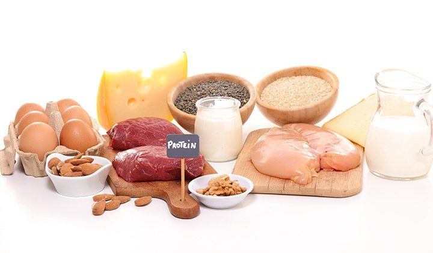

Glad you asked... Luckily we've compiled a website for you
Come up with a figure to roughly stick to. As daunting as that sounds, its important to come up with a price limit on your weekly grocery shopping. We found from our weekly Morrissons shopping experience that the £20 mark is a good shout to begin with.
Microwaves are your new best friend Did you know you can cook an egg in the microwave? Or boil some vegetables? A quick and easy wasy to make a wholesome meal! What to do with leftovers?
Some quick example text to build on the card title and make up the bulk of the card's content.